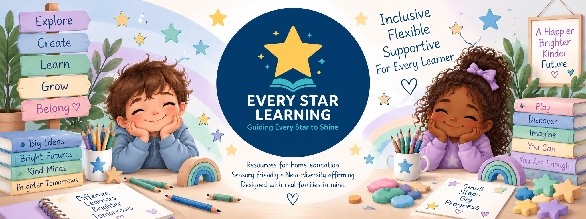
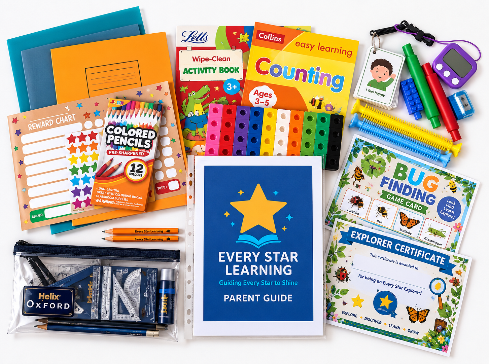

Every child learns differently. Our personalised SEND learning packs support children with ADHD, autism and additional learning needs with engaging, flexible resources tailored to how they learn best.
From structured learning and hands-on activities to sensory resources and learning through play, our SEND learning packs are designed to build confidence, reduce pressure and help every child learn in a way that works for them.
Explore Our Learning PacksOur personalised SEND learning packs are designed for children at different ages and stages, with flexible activities for ADHD, autism and additional learning needs.
Ages 3–5
Personalised SEND activities for ages 3–5, supporting early learning, communication, confidence and learning through play.
Explore Little StarsAges 5–7
Personalised SEND learning activities for ages 5–7, supporting growing skills, communication, confidence and independent learning.
Explore Rising StarsAges 7–9
Personalised SEND learning activities for ages 7–9, supporting independence, problem-solving, confidence and everyday learning skills.
Explore Shooting StarsAges 9–11
Personalised SEND learning activities for ages 9–11, supporting independence, confidence, problem-solving and learning at each child's own pace.
Explore Super StarsThoughtfully created personalised SEND learning packs for children with ADHD, autism and additional learning needs, designed to make home education flexible, engaging and easier to manage.

Personalised learning designed around your child's individual needs, interests and way of learning.
Each personalised SEND learning pack combines structured activities, hands-on learning and sensory resources, tailored to your child's age, interests and individual learning needs.
£149.99
Choose Your Personalised SEND Pack